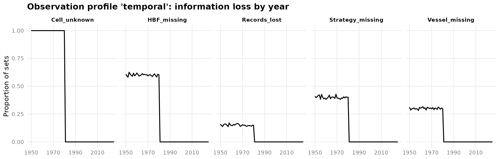

Observation process and scenario data sets
Source:vignettes/articles/observation-scenarios.Rmd
observation-scenarios.RmdThe fishery truth holds every latent variable. A real logbook does not. The observation process turns the truth into an observed data set, and the scenarios select regions, variables and observation profiles to build the data sets on which CPUE standardisations are tested.
library(pelagicOM)
library(ggplot2)
sim <- simulate_biomass(verbose = FALSE)
## fleets reduced to keep this article fast
fcfg <- om_fishery_config("BET_ICCAT",
fleets = list(A = list(n_vessels = 12), B = list(n_vessels = 10),
C = list(n_vessels = 9), D = list(n_vessels = 10),
E = list(n_vessels = 8)))
fish <- simulate_fishery(sim, fcfg, verbose = FALSE)Observed and latent columns
fish$observed_columns
#> [1] "Year" "Quarter" "Fleet"
#> [4] "VesselID" "TripID" "SetID"
#> [7] "Hooks" "HooksBetweenFloats" "Region"
#> [10] "Longitude" "Latitude" "Cell_ID"
fish$latent_columns
#> [1] "TrueFishingStrategy" "TrueDensity" "TrueBiomass"
#> [4] "TrueCatchability" "log_q" "q_fleet"
#> [7] "q_vessel" "q_strategy" "q_hbf"
#> [10] "q_creep" "q_quarter" "q_region"
#> [13] "q_spatial" "q_resid" "ExpectedCatch"
#> [16] "ZeroProb" "TrueCatch" "SelectionProb"
#> [19] "SpatialChoice" "FootprintCells" "FootprintFrac"
#> [22] "HBF_vessel_habit" "CellIndex" "TripIndex"
#> [25] "SetInTrip" "SetOrder" "Expected_YFT"
#> [28] "Expected_ALB" "Expected_SWO" "Expected_BSH"
#> [31] "TrueCatch_YFT" "TrueCatch_ALB" "TrueCatch_SWO"
#> [34] "TrueCatch_BSH" "TrueCatch_total"An observed data set has these columns:
- the observable variables;
-
FishingStrategy, the true strategy, which may be misclassified or missing; - the catch of the target species (
Catch) and of each companion species (Catch_<sp>).
Observation profiles
A profile is a list of periods. Each period sets one parameter per mechanism, and 0 switches a mechanism off:
| mechanism | parameter | effect |
|---|---|---|
| position error | position_sd |
Gaussian error (degrees), re-anchored to the nearest domain cell |
| coordinate resolution | coord_resolution |
1 or 5; with 5, positions become 5x5 centres and
Cell_ID becomes unknown |
| missing HBF | hbf_missing |
probability that HooksBetweenFloats is NA |
| effort error |
hooks_cv, hooks_round
|
multiplicative lognormal error and rounding of hooks |
| catch error |
catch_cv, catch_round
|
multiplicative error and rounding of catches (zeros stay zero) |
| missing strategy | strategy_missing |
probability that FishingStrategy is NA |
| missing vessel | vessel_missing |
probability that VesselID is NA |
| record loss | record_loss |
probability that a set is lost |
strategies$misclassification adds a misclassification of
the observed strategy. The observed region is always recomputed from the
observed latitude.
str(fcfg$observation$temporal)
#> List of 2
#> $ :List of 11
#> ..$ period : num [1:2] 1950 1980
#> ..$ position_sd : num 0.5
#> ..$ coord_resolution: num 5
#> ..$ hbf_missing : num 0.6
#> ..$ hooks_cv : num 0.15
#> ..$ hooks_round : num 100
#> ..$ catch_cv : num 0.2
#> ..$ catch_round : num 0.1
#> ..$ strategy_missing: num 0.4
#> ..$ vessel_missing : num 0.3
#> ..$ record_loss : num 0.15
#> $ :List of 11
#> ..$ period : num [1:2] 1981 2025
#> ..$ position_sd : num 0
#> ..$ coord_resolution: num 1
#> ..$ hbf_missing : num 0
#> ..$ hooks_cv : num 0
#> ..$ hooks_round : num 1
#> ..$ catch_cv : num 0
#> ..$ catch_round : num 0
#> ..$ strategy_missing: num 0
#> ..$ vessel_missing : num 0
#> ..$ record_loss : num 0Every profile starts from the same seed
(seeds$observation), so profiles differ only by their
parameters:
obs <- apply_observation_process(fish$data, "temporal", fcfg, fish$truth)
unlist(attr(obs, "mechanisms"))
#> profile n_true strategy_misclassified
#> "temporal" "293387" "0"
#> position_perturbed position_cell_changed coord_5deg
#> "102564" "54970" "102564"
#> region_changed hbf_missing strategy_missing
#> "329" "61621" "40964"
#> vessel_missing hooks_perturbed catch_perturbed
#> "30896" "102564" "102564"
#> records_lost
#> "15438"Scenarios
A scenario has:
- a name;
- the regions kept;
- the variables removed (
drop); - the observation profile;
- a description of its objective.
The BET_ICCAT preset has the eight scenarios of
Experimento 02:
sc <- do.call(rbind, lapply(fcfg$scenarios, function(s)
data.frame(name = s$name, regions = paste(s$regions, collapse = "+"),
drop = paste(s$drop, collapse = ", "),
observation = s$observation, objective = s$objective)))
knitr::kable(sc)| name | regions | drop | observation | objective |
|---|---|---|---|---|
| 01_global_complete | R01+R02+R03 | complete | Referencia: todas as regioes e variaveis | |
| 02_global_without_hbf | R01+R02+R03 | HooksBetweenFloats | complete | Efeito da ausencia de HBF (global) |
| 03_R02_complete | R02 | complete | Regiao central de maior abundancia e sobreposicao de frotas | |
| 04_global_temporal_uncertainty | R01+R02+R03 | temporal | Qualidade dos dados inferior em 1950-1980 (global) | |
| 05_R02_temporal_uncertainty | R02 | temporal | Qualidade dos dados inferior em 1950-1980 (R02) | |
| 06_R01_complete | R01 | complete | Regional R01 completo | |
| 07_R03_complete | R03 | complete | Regional R03 completo | |
| 08_R02_without_hbf | R02 | HooksBetweenFloats | complete | Ausencia de HBF em analise regional (R02) |
scen <- generate_scenarios(fish)
#> 01_global_complete 293387 sets R01+R02+R03
#> 02_global_without_hbf 293387 sets R01+R02+R03
#> 03_R02_complete 263046 sets R02
#> 04_global_temporal_uncertainty 277949 sets R01+R02+R03
#> 05_R02_temporal_uncertainty 248460 sets R02
#> 06_R01_complete 19079 sets R01
#> 07_R03_complete 11262 sets R03
#> 08_R02_without_hbf 263046 sets R02
scen
#> <pelagicOM scenario data sets> 8 data sets
#> 01_global_complete 293387 sets R01+R02+R03 complete
#> 02_global_without_hbf 293387 sets R01+R02+R03 complete
#> 03_R02_complete 263046 sets R02 complete
#> 04_global_temporal_uncertainty 277949 sets R01+R02+R03 temporal
#> 05_R02_temporal_uncertainty 248460 sets R02 temporal
#> 06_R01_complete 19079 sets R01 complete
#> 07_R03_complete 11262 sets R03 complete
#> 08_R02_without_hbf 263046 sets R02 complete
knitr::kable(scen$metadata[, c("name", "period", "n_sets",
"differences_from_complete")])| name | period | n_sets | differences_from_complete |
|---|---|---|---|
| 01_global_complete | 1950-2025 | 293387 | nenhuma (referencia) |
| 02_global_without_hbf | 1950-2025 | 293387 | variaveis removidas: HooksBetweenFloats |
| 03_R02_complete | 1950-2025 | 263046 | filtro regional: R02 |
| 04_global_temporal_uncertainty | 1950-2025 | 277949 | perfil de observacao: temporal |
| 05_R02_temporal_uncertainty | 1950-2025 | 248460 | filtro regional: R02; perfil de observacao: temporal |
| 06_R01_complete | 1950-2025 | 19079 | filtro regional: R01 |
| 07_R03_complete | 1962-2025 | 11262 | filtro regional: R03 |
| 08_R02_without_hbf | 1950-2025 | 263046 | filtro regional: R02; variaveis removidas: HooksBetweenFloats |
fig_observation_quality(fish, scen)
Your own profiles and scenarios
Profiles and scenarios are ordinary lists in the configuration. For example, the code below adds two things:
- a “modern noisy” profile, with small position and catch errors over the whole period and no vessel identity before 1990;
- two scenarios that use this profile: one global, and one restricted to the southern region without HBF.
fcfg2 <- fcfg
fcfg2$observation$modern_noisy <- list(
list(period = c(1950, 1989), position_sd = 0.25, coord_resolution = 1,
hbf_missing = 0.2, hooks_cv = 0.05, hooks_round = 10,
catch_cv = 0.10, catch_round = 0, strategy_missing = 1,
vessel_missing = 1, record_loss = 0.05),
list(period = c(1990, 2025), position_sd = 0.25, coord_resolution = 1,
hbf_missing = 0, hooks_cv = 0.05, hooks_round = 10,
catch_cv = 0.10, catch_round = 0, strategy_missing = 1,
vessel_missing = 0, record_loss = 0))
fcfg2$scenarios <- list(
list(name = "noisy_global", regions = c("R01", "R02", "R03"),
drop = character(0), observation = "modern_noisy",
objective = "Small errors everywhere, no vessel ID before 1990"),
list(name = "noisy_R03_without_hbf", regions = "R03",
drop = "HooksBetweenFloats", observation = "modern_noisy",
objective = "Southern region without HBF"))
fish2 <- simulate_fishery(sim, fcfg2, verbose = FALSE)
scen2 <- generate_scenarios(fish2)
#> noisy_global 286362 sets R01+R02+R03
#> noisy_R03_without_hbf 11147 sets R03
scen2
#> <pelagicOM scenario data sets> 2 data sets
#> noisy_global 286362 sets R01+R02+R03 modern_noisy
#> noisy_R03_without_hbf 11147 sets R03 modern_noisy
d <- scen2$datasets$noisy_global
tapply(is.na(d$VesselID), d$Year < 1990, mean)
#> FALSE TRUE
#> 0 1The truth does not depend on the observation profiles:
fish2$data is identical to fish$data.
identical(fish$data, fish2$data)
#> [1] TRUEThe scenario data sets are written to outputs/datasets/
by om_write_fishery() (see Outputs).